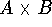
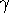
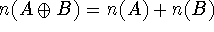
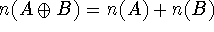

In the previous sections on recursive definition of functions the domains and ranges of the basic functions were prescribed and the defined functions had the same domains and ranges.
In this section we shall consider the definition of new sets and the basic functions on them. First we shall consider some operations whereby new sets can be defined.
1. The Cartesian product  of two sets A and B is the set of all ordered pairs with and . If A and B are finite sets and n(A) and n(B) denote the numbers of members of A and B respectively then .
Associated with the pair of sets (A,B) are two canonical
mappings:
defined by
defined by
The word ``canonical'' refers to the fact that and
 are defined by the sets A and B and do not depend
on knowing anything about the members of A and B.
are defined by the sets A and B and do not depend
on knowing anything about the members of A and B.
The next canonical function  is a function of two variables defined by

For some purposes functions of two variables, x from A and y from B, can be identified with functions of one variable defined on
2. The direct union  of the sets A and B is
the union of two non-intersecting sets one of which is in 1-1
correspondence with A and the other with B. If A and B are
finite, then  even if A and B
intersect. The elements of
of the sets A and B is
the union of two non-intersecting sets one of which is in 1-1
correspondence with A and the other with B. If A and B are
finite, then  even if A and B
intersect. The elements of  may be written as elements of
A or B subscripted with the set from which they come, i.e.
or
may be written as elements of
A or B subscripted with the set from which they come, i.e.
or
The canonical mappings associated with the direct union  are
are
defined by
defined by
defined by = T if and only if x comes from A,
defined by = T if and only if x comes from B.
There are two canonical partial functions and  . is defined only for elements
coming from A and satisfies Similarly,
satisfies
. is defined only for elements
coming from A and satisfies Similarly,
satisfies
3. The power set is the set of all mappings The canonical mapping is defined by
Canonical mappings. We will not regard the sets and as the same, but there is a canonical 1-1 mapping between them,
defined by
We shall write
to express the fact that these sets are canonically isomorphic.
Other canonical isomorphisms are
We shall denote the null set (containing no elements) by 0 and the set consisting of the integers from 1 to n by n. We have
Suppose we write the recursive equation
We can interpret this as defining the set of sequences of elements of A as follows:
1. Interpret as denoting the null sequence. Then the null sequence (strictly an image of it) is an element of S.
2. Since a pair consisting of an element of A and an element of S is an element of S, a pair is an element of S. So, then, are
Thus S consists of all sequences of elements of A including the null sequence.
Suppose we substitute for S in the right side of . We get
If we again substitute for S and expand by the distributive law expressed in equation (2) above we get
which, if we now denote the set by 1, becomes
which is another way of writing the set of sequences. We shall denote the set of sequences of elements of A by seq(A).
We can also derive this relation by writing and solving formally for S, getting S = 1/(1-A) which we
expand in geometric series to get just as before.
Another useful recursive construction is

Its elements have the forms a or or or etc. Thus we have the set of S-expressions on the alphabet A which we may denote by sexp(A). This set is the subject matter of Reference 7, and the following paragraph refers to this paper.
When sets are formed by this kind of recursive definition, the canonical mappings associated with the direct sum and Cartesian product operations have significance. Consider, for example, sexp(A).
We can define the basic operations of Lisp, i.e. atom, eq, car, cdr and cons by the equations
assuming that equality is defined on the space A.
Definition of the set of integers. Let 0 denote the null set as before.
We can define the set of integers I by
Its elements are then
which we shall denote by 0,1,2,3 etc. The successor and predecessor functions are then definable in terms of the canonical operations of the defining equation. We have